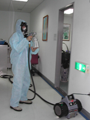
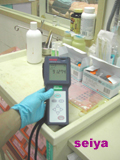

| 1.院內清潔消毒現況 |
台灣的醫院,其清潔外包(contracting out)大約是從40年前開始形成,本公司自民國六十二年承包三軍總醫院,2年後承包台北榮民總醫院,台大...等醫院,至今承包醫院經驗近40年,以往並不曾知道院內感染與清潔員的關連,但每2-3年都有在醫院工作的員工感染到肺結核,為了探討此原因,因此公司在西元2000年開始學習有關技術,一般而言在醫院大家會認為電梯按鍵或是門把扶手細菌最多,但以筆者實際經驗是水槽與清潔抹布.拖把等工具其細菌最多,以革蘭陽性菌具有在潮濕環境中生長高達250天,並且都居住在水槽之排水管內(Rutala WA,Weber DJ.Water as reservoir of nosocomial pathogens.Infect Control Hosp Epdemiol 1997:18:491-514),醫院中工作人員不管是醫生護士看護或是清掃工作者在肺結核病病房其主要危險是接觸和工作時間長短,我們都知道在許多案例人是院內感染的傳播者,這是無庸置疑的. |
 |
||||
| 院內感染防治清潔 | ||||||
| 感染因子 | ||||||
| .微生物消毒 | ||||||
|
依據美國CDC之定義：院內感染是指病患在住院期間得到的感染，而此感染在入院時並未發生，也不在此病之潛伏期內,隨著交通資訊的進步,人們接觸日趨頻繁,相對地細菌的傳播也比以前快速許多,近來醫療院所常被視為細菌傳染途徑的重要場所,越是口碑好的院所,人們出入也越多,所傳播的細菌相對的也是成正比,台灣地區各大院所原本每年都就有院內感染的案例,只是感染的程度不同,在醫藥業開發多種的抗生素,臨床實驗中的感染治療有極大的貢獻,但菌腫的再生與變種所產生的抗藥性,則是醫生最不願見到的. 醫療院所的感染防制中,事前的預防,降低感染途徑的工作的第一線人員可說是清潔人員,因此在院內感染防制中,清潔人員的裝備及專業更顯得特別重要,一個優良醫療院所,除了保護病人外,還需給醫生.護士.行政人員.才不會造成工作人員的恐慌.做好院內感染防制才可讓我們處於一個安心的治病或工作的空間.在者,年長幼童沒事儘量不要在醫院閒逛,要去養成醫院時帶口罩習慣,這些都是可避免不要的感染在國外的多篇研究中早已說明傳統的病院清潔已不符現代院內感染防治標準,因此提升環境清潔之院內感染防治領域,還需醫生護理人員與清潔專家共同努力.(筆者從事清潔近20年經驗,目前任職於世屋國際環境有限公司,研究開發有關院內感染之器材,並從事專利設計.) |
 |
|||||
 |
||||||
|
院 內 感 染 清 潔 機 制 |
||||||
| 日常清掃員・ 定期清掃員. 特別清掃. 特殊清掃. 管理人部署。 |
|
|||||
| ■依照 病房型態不同,制訂有關清潔作業。■實行預防感染細菌檢策。 | ||||||
| ■依病院人潮動向施行防治工作。■依病防感染情況啟動作業程序。 | ||||||
| 我們的施工完全依照訓練課程而制訂,預防病菌的傳播重於事後的改善是我們的理念 | ||||||
|
微 生 物 感 染 清 潔 消 毒 控 制 業 務 分 類 |
||||||
| ■日常清潔 ■定期清潔 ■通風 管清潔消毒 ■微生物消毒 |
|
|||||
| ■病媒防治 ■抗菌空間處理 ■微生物監控 ■消毒流程控管 ■專利開發共享授權 | ||||||
| (EXP)以醫院而言其業務應該含 | ||||||
| ■醫院機能■醫院組織 ■環境裝備■ 儀器裝備■院內安全 ■消毒概論■清潔計劃 ■ | ||||||
| 院內清潔 ■感染清潔 ■感染防制 ■院內安全 ■勞工安全■緊急應變 ■護理常識 | ||||||
| ■檢查報告 ■可靠度檢查 | ||||||
|
客 服 電 話 ■ 0 2 - 2 8 7 2 - 5 5 7 5 ■ |
||||||

世屋國際消毒公司 世屋消毒公司 紅葉日式清潔公司
Seiya-Takahara© 2003-2026 copyright